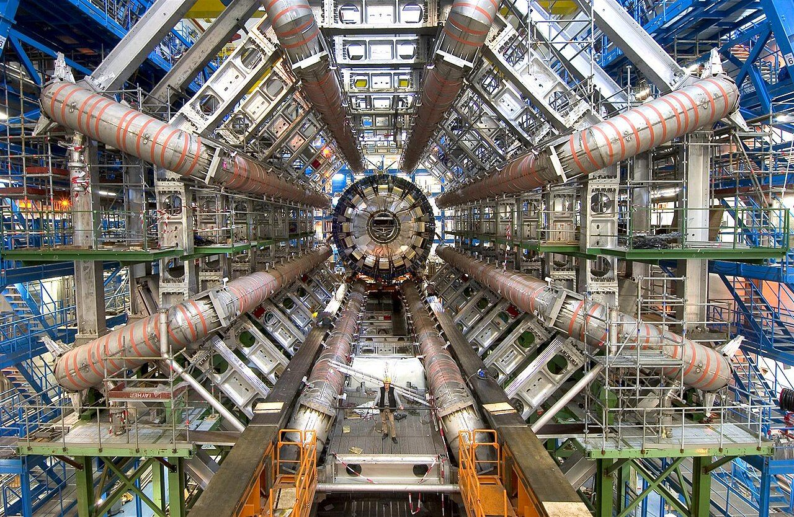
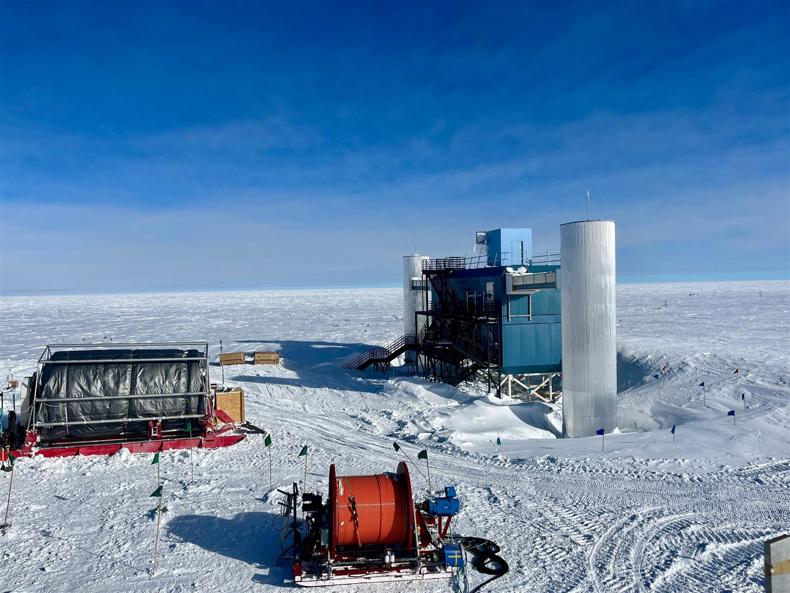
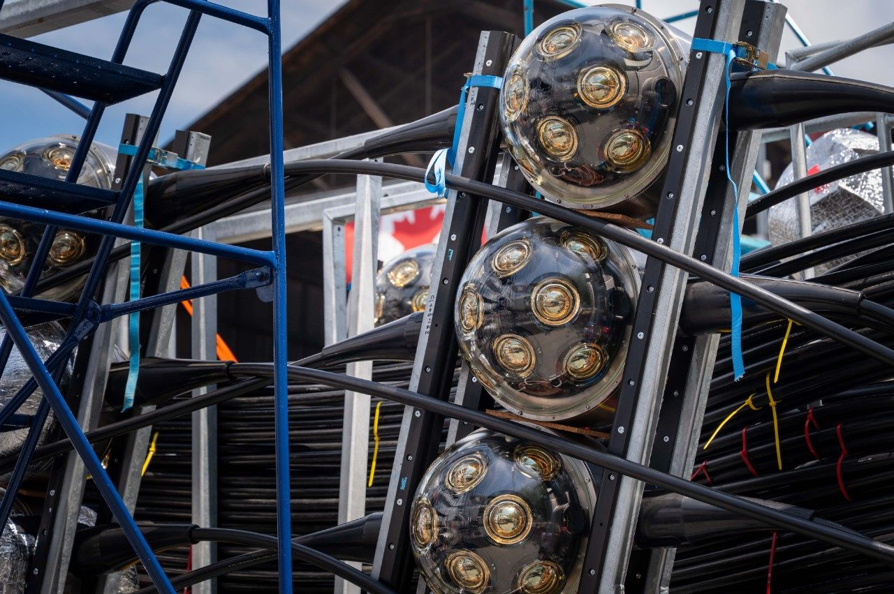

Our research

ATLAS
We analyze proton collisions recorded by the ATLAS detector at CERN, measure the Higgs boson, search for long-lived particles, and build parts of the new ATLAS Inner Tracker.
About our ATLAS work →
IceCube
IceCube detects neutrinos from deep space with sensors frozen into a cubic kilometre of Antarctic ice. SFU's Darren Grant is a former IceCube spokesperson.
About IceCube →
P-ONE
SFU leads the science of the Pacific Ocean Neutrino Experiment, a neutrino telescope being built on the seafloor off Vancouver Island.
About P-ONE →High performance computing
Analyzing LHC data takes serious computing. SFU hosts the ATLAS-Canada Tier-1 data centre and national research supercomputing.
About computing →Education
We train students as research scientists, with a path into high energy physics or big-data computing.
Meet our students →Latest news
Want to do research with us?
We welcome graduate and undergraduate students interested in particle and astroparticle physics.
Photos: ATLAS detector by CERN, CC BY 4.0, via Wikimedia Commons. P-ONE photos by Simon Fraser University. IceCube Lab by the U.S. Geological Survey, public domain, via USGS.